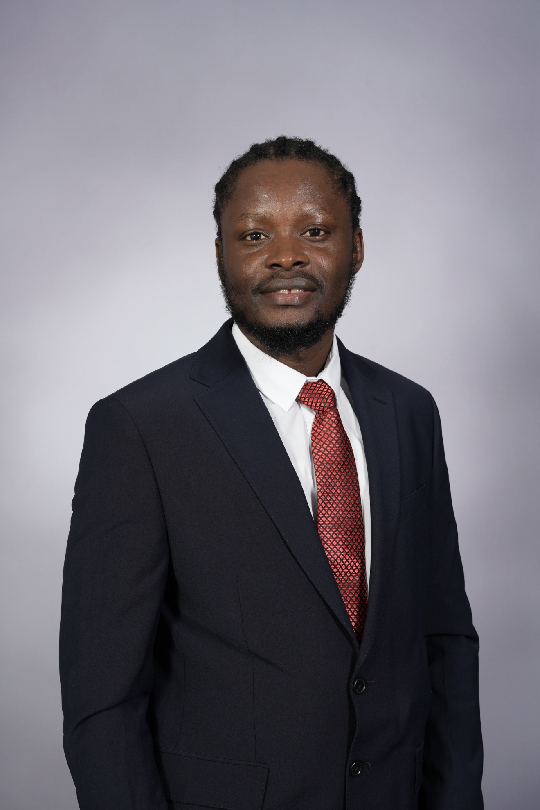

We are inspiring the next generation of leaders to grow into clarity, confidence, and purpose.

Peter Obami is an author, founder, researcher, businessman, leadership mentor, growth coach, and clinical AI innovator. He is the founder of Histolyte Technologies, a fast‑rising clinical AI company developing intelligent diagnostic tools and digital pathology systems that are transforming the healthcare landscape and redefining the modern patient journey.
With a background in biomedical science, digital pathology, and AI engineering, Peter has contributed to research across computational pathology, biomarkers, tissue analytics, and clinical workflow optimisation. His work includes peer‑reviewed publications, collaborative research outputs, and conference presentations in the fields of healthcare innovation, artificial intelligence, and clinical diagnostics. Peter’s research focuses on building safe, interpretable, and clinically meaningful AI systems that support pathologists, enhance diagnostic accuracy, and improve patient outcomes.
Through Histolyte, Peter leads the development of software pipelines, automated tissue systems, and next‑generation digital pathology tools. His work bridges scientific rigour with real‑world clinical impact, ensuring that AI solutions are not only technically advanced but also aligned with the needs of clinicians, laboratories, and healthcare organisations.
Beyond his scientific and technical contributions, Peter is a transformational leadership mentor and personal development coach who works with founders, students, professionals, and emerging leaders. Through his coaching network, he helps individuals gain clarity, direction, and grounded confidence; building capacity, strengthening identity, and inspiring long‑term productivity. Peter is committed to shaping the next generation of leaders through a blend of strategic thinking, emotional intelligence, and practical guidance.
Peter’s coaching philosophy is rooted in clarity, identity, and intentional action, principles he applies both in his personal development work and in the way he builds and leads technical teams. His mission is simple: to build intelligent tools that transform healthcare, and to empower people to step confidently into the life and leadership they were meant to lead.
We provide mentorship, leadership guidance, and productivity coaching dedicated to helping people unlock their potential and step into the life they were meant to lead.
Towards productivity, confidence, self‑management and purpose‑driven life - no matter where you’re starting from.